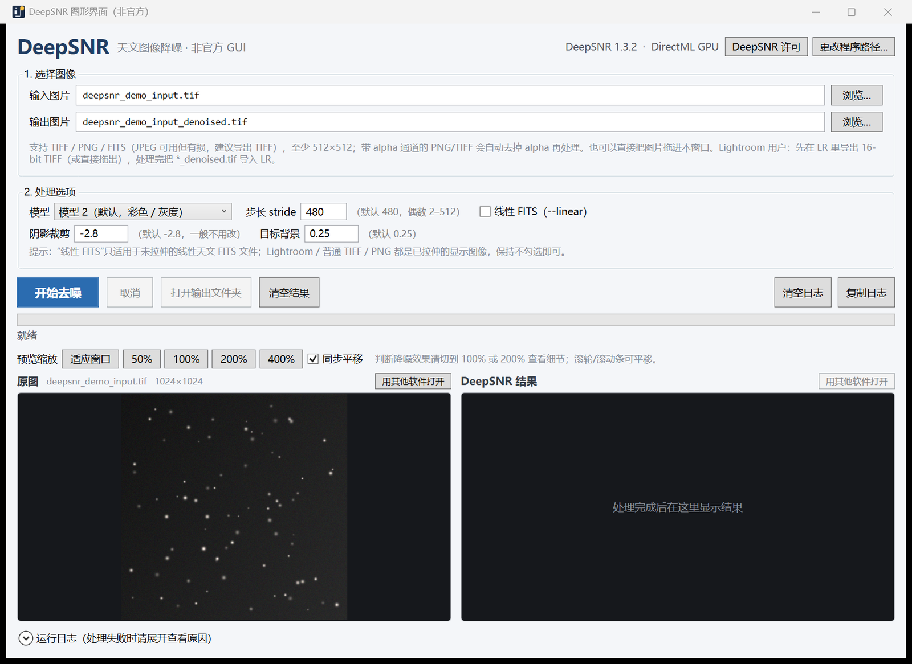

🖼️
拖拽即用
TIFF / PNG / FITS / JPEG，直接拖进窗口；支持一次拖入多张自动排队。
拖拽图片、设置参数、实时进度、100% 前后对比——不用 PixInsight，也不用 Photoshop。
仅调用你本地已安装的官方 deepsnr.exe，不捆绑、不镜像、不分发 DeepSNR 本体。

官方目前提供 PixInsight 模块、Photoshop 插件、命令行工具三种形式。这个项目用官方许可允许的方式（独立进程调用 CLI）补上桌面 GUI 的空白。
TIFF / PNG / FITS / JPEG，直接拖进窗口；支持一次拖入多张自动排队。
左右并排对比，50% / 100% / 200% / 400% 缩放，同步平移，按像素检查降噪效果。
4 通道 PNG/TIFF 会自动转成无 alpha 的 3 通道临时文件再交给 DeepSNR，处理完自动清理。
模型 1/2、stride、线性 FITS（--linear 等）参数；进度条、完整日志、取消一应俱全。
Per-Monitor V2 DPI 适配，从 150% 主屏拖到 125% 副屏也不会被裁切或模糊。
LR 导出 16-bit TIFF → 拖进 GUI 处理 → 把 *_denoised.tif 导回 LR，无需 PS/PI。
本仓库不包含 DeepSNR 本体。先装官方 CLI，再运行本 GUI。
从官方页面下载 Windows 安装包并安装（默认 D:\DeepSNR 或 C:\Program Files\DeepSNR）。使用 DeepSNR 需接受其许可协议。
从 Releases 下载 DeepSNR_GUI.exe（Windows 10/11 自带 .NET Framework 4.8），或自行编译：
git clone https://github.com/OWNER/deepsnr-gui.git
cd deepsnr-gui
powershell -NoProfile -ExecutionPolicy Bypass -File .\build.ps1在 Windows 资源管理器里双击 DeepSNR_GUI.exe，把图片拖进窗口 → 开始去噪。
DeepSNR 官方提供三种使用方式；本项目是第四种“非官方桌面 GUI”。
| 形式 | 适合 | 需要 |
|---|---|---|
| PixInsight 模块 | PixInsight 用户 | PixInsight |
| Photoshop 插件 | Photoshop 用户 | Photoshop 26.11.7+ |
| 命令行工具 / Siril 脚本 | 自动化、脚本、其他软件调用 | 命令行 |
| 本项目（非官方 GUI） | 没有 PI / PS 的桌面用户，例如 Lightroom 用户 | 官方 CLI + 本 GUI |
这是非官方项目。以下说明用于避免误解（不构成法律意见）。
本仓库不包含、不镜像、不缓存、不重新分发 DeepSNR 的可执行文件、模型权重或安装包。请从官方渠道下载安装。
DeepSNR 是 Mikita (Nikita) Misiura 的产品。本项目与 StarNet Software 没有隶属关系，也未获其背书。
DeepSNR 许可允许其他应用/脚本以独立进程方式调用其 CLI。本 GUI 即采用这种方式，并在界面中保留产品名与许可入口。
GUI 源代码采用 MIT License。截图使用自行生成的合成测试图，并清空了结果预览，不包含 DeepSNR 输出图像。
商业打包分发、镜像或其他超出许可范围的用途，请先联系 StarNet Software 取得书面许可： 官方联系页面 ↗